Breakthroughs in Particle and Nuclear Physics#
“It was quite the most incredible event that has ever happened to me in my life. It was almost as incredible as if you fired a 15-inch shell at a piece of tissue paper and it came back and hit you.”
—Ernest Rutherford, recalling the Geiger-Marsden alpha-scattering results, 1911
Particle and nuclear physics began with an accident on a cloudy Paris
afternoon and grew, within a century, from a qualitative curiosity about
“rays” into a full relativistic theory of collisions, decays, and the
internal structure of matter – a theory precise enough to predict, and
then discover, particles from the neutron to the Higgs boson before their
existence was otherwise suspected. The thread connecting these advances
is kinematics: energy and momentum, bound together in a four-vector, are
conserved in every decay and every collision, and the invariants built
from them – masses, half-lives, cross sections, Mandelstam variables,
reconstructed resonance masses – are exactly what a modern scattering or
decay calculation in physicskit.particle computes. This chronology
traces those breakthroughs from the discovery of radioactivity to the
2012 discovery of the Higgs boson, the invariant-mass “bump hunt” still
used at every collider today, with a pointer to the corresponding
implementation, a structural diagram of the physical setup, and a short
runnable example reproducing each milestone’s signature observable.
1896 – Becquerel’s Discovery of Radioactivity#
Henri Becquerel set out to test whether phosphorescent uranium salts, after exposure to sunlight, emitted the newly discovered X-rays. A run of overcast days in Paris left his photographic plates, wrapped in opaque paper with a uranium salt sample on top, undeveloped in a drawer for several days with no sunlight at all – yet on developing them anyway he found a sharp image of the sample, exposed with no external excitation whatsoever. The uranium itself was spontaneously emitting penetrating radiation, unprompted by light, chemistry, or any known energy source. This chance observation – Becquerel rays, soon renamed radioactivity by Marie Curie – opened an entirely new domain of physics: matter that transforms itself, releasing energy from within the atom, at a rate
set by nothing but the sample itself, exactly the blackening rate that exposed Becquerel’s plate.
Connection: every quantity in physicskit.particle.decays –
the decay constant returned by decay_constant(),
the population radioactive_decay_number(),
the activity() of a sample – is a
precise, quantitative descendant of Becquerel’s qualitative observation
that a lump of uranium salt spontaneously exposes a photographic plate.
References: H. Becquerel, “Sur les radiations émises par phosphorescence,” C. R. Acad. Sci. 122, 420-421 (1896); follow-up notes, ibid. pp. 501-503 and 559-564.
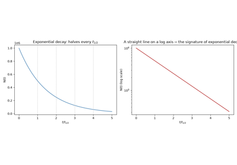
The radioactive decay law: Becquerel, Rutherford, and Soddy
1902-1903 – Rutherford and Soddy’s Law of Radioactive Decay#
Working with thorium compounds at McGill, Ernest Rutherford and Frederick Soddy showed that radioactivity is the signature of one element transmuting into another: a parent atom spontaneously converts to a different “daughter” element, and the number of parent atoms remaining falls off exponentially in time,
with decay constant \(\lambda\) characteristic of the parent species and independent of temperature, pressure, or chemical environment – a striking sign that the process is nuclear, not chemical. Their 1902-1903 papers, “The Cause and Nature of Radioactivity” and “Radioactive Change,” introduced both the disintegration theory of radioactivity and the notion of a characteristic period (later formalized as the half-life \(t_{1/2} = \ln 2/\lambda\)) at which half of any sample decays.
Implementation: physicskit.particle.decays.decay_constant() and
half_life() convert between
\(\lambda\) and \(t_{1/2}\);
radioactive_decay_number() evaluates
\(N(t)\) exactly, and activity()
gives the corresponding decay rate \(-dN/dt = \lambda N\).
References: E. Rutherford and F. Soddy, “The Cause and Nature of Radioactivity, Parts I and II,” Phil. Mag. Ser. 6, 4, 370-396 and 569-585 (1902); “Radioactive Change,” Phil. Mag. 5, 576-591 (1903).
The radioactive decay law: Becquerel, Rutherford, and Soddy
1905 – Einstein and Mass-Energy Equivalence#
In the last of his 1905 annus mirabilis papers, Albert Einstein drew out a consequence of special relativity that even he called “amusing and enticing”: if a body emits energy \(E\) as radiation, its inertial mass must decrease by \(E/c^2\). Generalized, this becomes the equivalence of rest mass and rest energy,
the rest-frame special case of the fully relativistic energy-momentum relation \(E^2 = (pc)^2 + (mc^2)^2\). Every subsequent particle-physics calculation – from the energy released in alpha decay to the invariant mass reconstructed from a collider event – rests on treating mass not as a conserved substance but as one component of a conserved four-vector.
Connection: physicskit.particle.kinematics.FourVector builds
exactly this object, with its .mass property returning the invariant
\(\sqrt{E^2 - |\mathbf p|^2}\) (natural units, \(c=1\)) that
reduces to Einstein’s \(E_0 = mc^2\) in the particle’s own rest
frame, where \(\mathbf p = 0\).
References: A. Einstein, “Ist die Trägheit eines Körpers von seinem Energieinhalt abhängig?,” Ann. Phys. 18, 639-641 (1905).
1910 – Bateman’s Equations for Radioactive Decay Chains#
Real radioactive samples rarely decay in one step: uranium and thorium each head long chains of successive daughters, each one itself unstable. Harry Bateman, prompted by correspondence with Rutherford, solved the resulting linear system of coupled decay equations in closed form, giving the population of the \(n\)-th species in a chain \(N_1 \to N_2 \to \cdots \to N_n\) at time \(t\) as an explicit sum of exponentials in the decay constants \(\lambda_1, \ldots, \lambda_n\):
Published in 1910 in the Proceedings of the Cambridge Philosophical Society – decades before its most important applications in nuclear reactor physics and radioactive dating existed – Bateman’s solution remains the standard closed-form answer to the decay-chain problem.
Implementation: physicskit.particle.decays.bateman_decay_chain()
evaluates exactly this closed-form solution for an arbitrary chain of
decay constants and initial populations N0, and
physicskit.particle.visualizers.plot_decay_chain() plots the
resulting populations directly;
physicskit.particle.visualizers.animate_decay_chain_bars() animates
the same populations as a bar chart evolving frame by frame, watching the
parent deplete and each daughter rise and then fall in its turn.
References: H. Bateman, “The solution of a system of differential equations occurring in the theory of radioactive transformations,” Proc. Cambridge Phil. Soc. 15, 423-427 (1910).
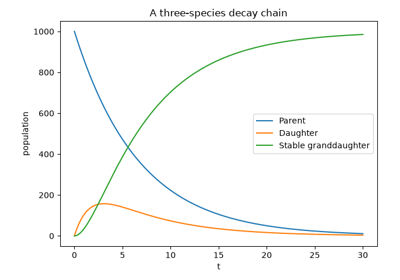
Bateman’s equations for radioactive decay chains
1911 – Rutherford Scattering and the Discovery of the Nucleus#
Interpreting Hans Geiger and Ernest Marsden’s 1909 observation that a small fraction of alpha particles fired at a thin gold foil bounced back at large angles – utterly unexpected under J. J. Thomson’s diffuse “plum pudding” atomic model, and at that stage still only a qualitative anomaly with no theory to explain it – Rutherford showed in 1911 that the results implied nearly all of an atom’s mass and positive charge is concentrated in a minuscule central nucleus. Treating the alpha particle and nucleus as point charges interacting via the Coulomb force, he derived the differential cross section for elastic Coulomb scattering,
predicting the full \(1/\sin^4(\theta/2)\) angular dependence of the scattered alpha particles, including the fraction expected at the large angles that had first drawn attention to the anomaly. The precise quantitative test of that prediction did not come until two years later: Geiger and Marsden’s 1913 measurements, scanning the scattering rate across a wide range of angles, foil thicknesses, and alpha-particle velocities, confirmed Rutherford’s formula point for point and remain, to this day, the textbook experimental verification of the existence of the atomic nucleus.
Implementation: physicskit.particle.scattering.rutherford_dsigma_domega()
implements this formula directly (with
ALPHA_FS as its default
coupling constant), and
impact_parameter() recovers the
classical impact parameter \(b(\theta)\) behind a given scattering
angle – the geometric quantity Rutherford used to argue that the
nucleus’s size sets a lower bound on how close an alpha particle can
approach before the inverse-square law must break down.
References: E. Rutherford, “The Scattering of alpha and beta Particles by Matter and the Structure of the Atom,” Phil. Mag. Ser. 6, 21, 669-688 (1911). The qualitative large-angle anomaly that motivated the theory: H. Geiger and E. Marsden, Proc. R. Soc. A 82, 495-500 (1909). The definitive quantitative test, published two years after Rutherford’s theory: H. Geiger and E. Marsden, Phil. Mag. 25, 604-623 (1913).
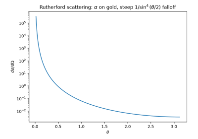
Rutherford scattering and the discovery of the nucleus
1923 – Compton Scattering and the Photon as a Relativistic Particle#
X-rays scattered off light elements came back, Arthur Compton found, with a wavelength shift that depended only on the scattering angle, not on the target material – a result the classical wave picture of radiation (in which scattered light keeps the incident wavelength) could not explain at all. Compton treated the X-ray as a genuine relativistic particle, a photon of energy \(E=h\nu\) and momentum \(p=h\nu/c\), colliding elastically with a free electron, and imposed ordinary energy-momentum conservation on the two-body collision \(\gamma + e^- \to \gamma' + e^{-\prime}\). The result is the Compton formula for the scattered photon’s wavelength shift,
with \(\theta\) the photon’s scattering angle and \(h/(m_e c)\) the electron’s Compton wavelength. That a photon carries momentum as well as energy, and conserves both exactly like any other relativistic particle in a two-body collision, was decisive evidence – alongside the photoelectric effect – for the reality of light quanta, and made relativistic two-body kinematics, rather than classical wave optics, the correct language for describing how radiation scatters off matter.
Connection: the Compton formula above is exactly what conservation of
a four-momentum FourVector
between initial and final states demands of a massless-particle-on-electron
collision – the same energy-momentum bookkeeping that
physicskit.particle.scattering.mandelstam_s() and its companion
invariants generalize to an arbitrary relativistic
\(1+2\to3+4\) collision six decades later (see the 1958 Mandelstam
entry below); no dedicated Compton-formula function exists in
physicskit.particle, but the underlying two-body relativistic
collision machinery is the same in either case.
References: A. H. Compton, “A Quantum Theory of the Scattering of X-rays by Light Elements,” Phys. Rev. 21, 483-502 (1923).
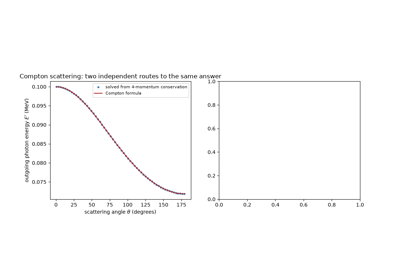
Compton scattering: the photon as a relativistic particle
1930 – Pauli’s Neutrino Hypothesis#
Beta decay’s electron energy spectrum, measured with increasing precision through the 1920s (notably by Charles Ellis and William Wooster in 1927), was hard to reconcile with a two-body nuclear transition \(A(Z)\to A(Z+1)+e^-\): two-body decay kinematics forces the electron to a single, sharply fixed energy in the parent’s rest frame – the same fixed momentum \(p^*\) that any two-body decay gives its daughters. Instead, electrons emerged with a continuous spread of energies up to a fixed endpoint, as if energy – and, so far as anyone could tell, momentum and angular momentum too – simply vanished in some decays. In a December 1930 letter addressed, half-jokingly, to “Dear Radioactive Ladies and Gentlemen” at a conference he could not attend, Wolfgang Pauli proposed a “desperate remedy”: a third particle, electrically neutral, of very small (possibly zero) mass, and so weakly interacting as to have escaped every detector so far – emitted alongside the electron and carrying off exactly the missing energy, momentum, and angular momentum. Beta decay was not two-body but three-body, \(n\to p+e^-+\bar\nu\), and the continuous electron spectrum was simply three-body phase space rather than any violation of conservation laws. Enrico Fermi, who named the hypothetical particle the “neutrino” (“little neutral one,” to distinguish it from Chadwick’s heavier, and by-then-discovered, neutron), built it into a full quantitative theory of beta decay within a few years (see the entry below).
Connection: physicskit.particle.decays.two_body_decay_momentum()
computes exactly the single, fixed daughter momentum \(p^*\) that any
genuine two-body decay must produce – the same fixed-energy prediction
Ellis and Wooster’s measurements contradicted, and the contradiction
Pauli’s postulated third particle was invented to resolve.
muon_decay_event(), by contrast, builds
a genuine three-body weak decay from two chained two-body decays, giving
its visible daughter (the electron) a continuous, phase-space-shaped
energy spectrum rather than a single fixed value – exactly the
qualitative signature, already present in Pauli’s proposed
\(n\to p+e^-+\bar\nu\), that only a three-body decay can produce.
References: Pauli’s proposal is known only from an unpublished letter (4 Dec. 1930) to a conference he could not attend; his first public presentation of it came three years later: W. Pauli, in Rapports du Septième Conseil de Physique Solvay (1933). The measurements motivating it: C. D. Ellis and W. A. Wooster, Proc. R. Soc. A 117, 109-123 (1927).
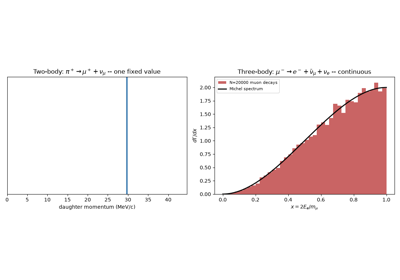
Pauli, Fermi, and the pion: two-body vs. three-body decay kinematics
1932 – Chadwick’s Discovery of the Neutron#
For two decades after Rutherford’s nuclear model, the nucleus was assumed to be built from protons and enough bound electrons to fix its charge – a picture in tension with nuclear spin statistics and unable to explain the strange, highly penetrating, electrically neutral radiation Bothe and Becker (and then Irene and Frederic Joliot-Curie) had observed coming from beryllium bombarded by alpha particles. James Chadwick showed by careful energy-momentum bookkeeping that this radiation could not be gamma rays, as others supposed, but had to be a new, roughly proton-mass, electrically neutral particle: the neutron. This single discovery replaced the proton-electron nucleus with the modern proton-neutron picture, at a stroke resolving the spin-statistics puzzle and supplying the second fundamental constituent every nuclear model since has been built from – a nucleus of mass number \(A\) and atomic number \(Z\) is exactly \(Z\) protons and \(N=A-Z\) neutrons.
Connection: the neutron and proton counts N = A - Z and Z that
parametrize every nucleus in physicskit.particle.nuclear –
semf_binding_energy(),
binding_energy_per_nucleon(), and
q_value() – presuppose exactly the
proton-neutron nucleus Chadwick’s discovery established; none of them
are expressible in the proton-electron model it replaced, which has no
independent way to vary \(N\) at fixed \(Z\).
References: J. Chadwick, “Possible Existence of a Neutron,” Nature 129, 312 (1932); “The Existence of a Neutron,” Proc. R. Soc. A 136, 692-708 (1932).
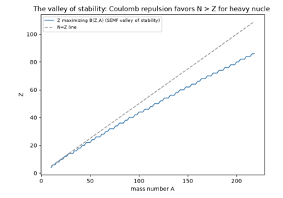
Chadwick’s neutron and the Weizsacker semi-empirical mass formula
1932 – Cockcroft and Walton: The First Artificial Nuclear Disintegration#
Using a voltage-multiplying accelerator of their own design, John Cockcroft and Ernest Walton fired protons, accelerated through only about 700 kV, at a lithium-7 target and observed it split into two alpha particles,
the first nuclear reaction ever induced entirely by artificially accelerated particles – “splitting the atom” in the popular press of the day. Measuring the kinetic energy of the outgoing alpha particles with a scintillation screen, they found it matched, to within experimental error, the energy predicted from the reactants’ and products’ mass difference via \(Q = \Delta m\,c^2\): the first direct, quantitative laboratory verification of Einstein’s mass-energy relation in a nuclear reaction, for which Cockcroft and Walton shared the 1951 Nobel Prize in Physics.
Implementation: physicskit.particle.nuclear.q_value() computes
exactly this mass-difference energy release, \(Q=\sum m_{\rm
reactants}-\sum m_{\rm products}\), for an arbitrary reaction’s rest
masses.
References: J. D. Cockcroft and E. T. S. Walton, Proc. R. Soc. A 137, 229-242 (1932); earlier preliminary note, Proc. R. Soc. A 136, 619-630 (1932).
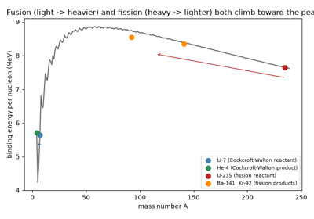
Cockcroft-Walton’s disintegration and the discovery of fission
1932 – Carl Anderson: The Positron and the Curving Cloud-Chamber Track#
Paul Dirac’s 1928 relativistic electron equation carried, seemingly as an unwanted byproduct, negative-energy solutions; by 1931 Dirac had proposed reinterpreting the unfilled negative-energy states as a new particle with the electron’s mass but opposite charge. Carl Anderson, photographing cosmic-ray tracks in a cloud chamber built inside a powerful electromagnet at Caltech, found on 2 August 1932 a track that curved the “wrong” way for either a proton or an electron travelling in the direction its ionization density required. A lead plate placed across the middle of the chamber settled the question: the particle lost energy and curved more sharply after crossing the plate, fixing its direction of travel and, with it, the sign of its charge from the sense of the curvature. Anderson had found the positron, the electron’s antiparticle, for which he shared the 1936 Nobel Prize in Physics.
The measurement is pure geometry: a charged particle of transverse momentum \(p_T\) moving through a uniform magnetic field \(B\) traces a circular arc of radius
so a photograph of the curved track, together with the known field strength, fixes both the particle’s momentum and the sign of its charge from which way the arc bends – exactly the reasoning Anderson applied to the anomalous track.
Implementation: physicskit.particle.collider.charged_track_points()
implements this arc geometry directly, \(r=p_T/(qB)\) (a straight
line for a neutral particle, charge=0), for any four-momentum,
charge, and field strength, returning the trajectory as an array of
points;
physicskit.particle.visualizers.animate_detector_event() animates
the corresponding tracks growing outward from a collision vertex and
curving oppositely for oppositely charged particles – exactly the
sign-of-charge determination Anderson made from a single photograph.
References: C. D. Anderson, “The Apparent Existence of Easily Deflectable Positives,” Science 76, 238-239 (1932); full paper, “The Positive Electron,” Phys. Rev. 43, 491-494 (1933). Dirac’s prediction: P. A. M. Dirac, Proc. R. Soc. A 117, 610-624 (1928) and Proc. R. Soc. A 133, 60-72 (1931).
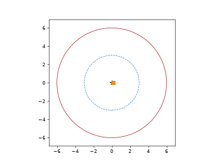
Cloud-chamber tracks: the positron and the muon
1933-1934 – Fermi’s Theory of Beta Decay#
Building directly on Pauli’s neutrino hypothesis, Enrico Fermi published in 1933 (rejected by Nature as “too remote from reality”) and 1934 a complete quantitative theory of beta decay modeled explicitly on quantum electrodynamics: just as QED couples a photon to a conserved electric current, Fermi coupled the four fermions involved in beta decay – the initial neutron, the final proton, the emitted electron, and Pauli’s neutrino – directly to one another at a single point in spacetime, with a new coupling constant \(G_F\) (the “Fermi constant”) setting the strength of what came to be called the weak interaction, joining gravity, electromagnetism, and (later) the strong force as one of the four fundamental interactions. Because all four fermions meet at a single vertex with no propagating intermediate particle, the theory predicts the shape of the emitted electron’s energy spectrum from phase space alone (up to a Coulomb correction, the Fermi function, for the electron’s attraction to the daughter nucleus); plotted the right way (the Kurie plot, introduced a few years later), the predicted spectrum falls linearly to zero exactly at the reaction’s kinematic endpoint, the maximum electron energy set by the nuclear \(Q\)-value. Precision measurements throughout the 1930s confirmed both the spectrum’s shape and its endpoint, vindicating Fermi’s theory and, with it, Pauli’s neutrino – more than two decades before the neutrino itself was directly detected.
Implementation: the reaction’s available energy – the endpoint against
which Fermi’s predicted spectrum was tested – is exactly the
\(Q\)-value physicskit.particle.nuclear.q_value() computes as
the reactant-product mass difference, \(Q=\sum m_{\rm
reactants}-\sum m_{\rm products}\), here shared among three final-state
particles (proton, electron, antineutrino) rather than the two-body
reactions the function has computed in earlier entries.
physicskit.particle.decays.muon_decay_event() is a direct modern
descendant of exactly this construction applied to a different
four-fermion weak vertex, \(\mu^-\to e^-+\bar\nu_\mu+\nu_e\): two
chained calls to two_body_decay() split
the available energy among three final-state particles by phase space,
precisely as Fermi’s contact interaction does for nuclear beta decay, and
michel_spectrum() is the corresponding
modern (V-A, Fermi-constant-normalized) electron energy spectrum, the
muon-decay analogue of the beta-decay spectrum Fermi’s theory first
predicted.
References: E. Fermi, “Tentativo di una teoria dei raggi beta,” La Ricerca Scientifica 4, 491-495 (1933); “Versuch einer Theorie der beta-Strahlen. I,” Z. Phys. 88, 161-177 (1934).
Pauli, Fermi, and the pion: two-body vs. three-body decay kinematics
1935 – The Weizsacker Semi-Empirical Mass Formula#
Carl Friedrich von Weizsacker combined the liquid-drop picture of the nucleus – treating it as an incompressible fluid of nucleons held together by a short-range, saturating force – with quantum corrections for symmetry and pairing into a single closed-form estimate of nuclear binding energy as a function of mass number \(A\) and atomic number \(Z\):
a volume term, a surface term (penalizing nucleons at the drop’s “surface”), a Coulomb repulsion term, an asymmetry term favoring \(N \approx Z\), and a pairing term rewarding even-even configurations. Despite its simplicity – five fitted constants standing in for the full many-body problem – the semi-empirical mass formula (SEMF) reproduces the binding energy of nearly every known nuclide to a few percent, explains the peak of nuclear stability near iron, and correctly predicts that both very light and very heavy nuclei can release energy: by fusion in the first case, fission in the second.
Implementation: physicskit.particle.nuclear.semf_binding_energy()
evaluates \(B(Z,A)\) exactly as above, and
binding_energy_per_nucleon() gives
\(B(Z,A)/A\), whose maximum near iron this formula was the first to
explain quantitatively.
References: C. F. von Weizsäcker, “Zur Theorie der Kernmassen,” Z. Phys. 96, 431-458 (1935).
Chadwick’s neutron and the Weizsacker semi-empirical mass formula
1936-1937 – Anderson, Neddermeyer, Street, and Stevenson: Discovery of the Muon#
Cataloguing cosmic-ray tracks in a cloud chamber at Caltech – the same apparatus that had revealed the positron four years earlier – Carl Anderson and Seth Neddermeyer found tracks of penetrating charged particles whose curvature and ionization implied a mass far too large for an electron but far too small for a proton: something in between. Jacob Curtis Street and Edward Stevenson confirmed the new particle’s existence and pinned down its mass, using a cloud chamber triggered by counters above and below a lead absorber to select unusually penetrating tracks, at roughly 200 electron masses – close to the value Hideki Yukawa had predicted in 1935 for the hypothetical meson carrying the strong nuclear force. For a decade the new particle was widely, and mistakenly, taken to be Yukawa’s meson: it was not until Cecil Powell’s group found the true meson in 1947 (see the entry below) – a particle that decays into this one – that the two were finally recognized as distinct, and the misidentified cosmic-ray particle was given its own name, the muon.
The same curvature-and-ionization method used to identify the positron gives a charged particle’s momentum from the radius of its circular track in a known magnetic field,
with the particle’s ionization density (or, as in Street and Stevenson’s apparatus, its ability to penetrate a known thickness of absorber) supplying the independent estimate of velocity needed to convert that momentum into a mass – exactly the combination of measurements that placed the muon between the electron and the proton.
Connection: physicskit.particle.collider.charged_track_points()
implements exactly the same track-curvature geometry,
\(r=p_T/(qB)\), used in the Anderson positron entry above to
determine a particle’s momentum and charge sign from its curved track –
the identical measurement, applied here to a track whose inferred mass
sat unexplained between the electron’s and the proton’s until the pion’s
1947 discovery clarified what it was (and was not).
muon_decay_event() and
michel_spectrum(), used extensively in
the pion entry below for the muon’s own subsequent decay, presuppose
exactly the particle whose existence this entry establishes.
References: C. D. Anderson and S. H. Neddermeyer, Phys. Rev. 50, 263-271 (1936) and Phys. Rev. 51, 884-886 (1937); J. C. Street and E. C. Stevenson, Phys. Rev. 52, 1003-1004 (1937).
Cloud-chamber tracks: the positron and the muon
1937 – Bhabha, Heitler, Carlson, and Oppenheimer: The Cascade Theory of Cosmic-Ray Showers#
Cosmic-ray physicists in the early 1930s – Bruno Rossi and Pierre Auger prominent among them – had measured how the number of particles in a cosmic-ray “shower” first grows, then shrinks, as the shower descends through the atmosphere (the empirical “Rossi transition curve”), without a first-principles explanation of why. In 1937, two groups independently and essentially simultaneously worked out the theory: Homi Bhabha and Walter Heitler in Britain, and J. Franklin Carlson and J. Robert Oppenheimer in the United States, each using the newly derived Bethe-Heitler quantum-electrodynamic cross sections for bremsstrahlung and electron-positron pair production to show that a single high-energy electron, positron, or photon entering matter alternately radiates a photon or, if that photon is energetic enough, materializes it into an electron-positron pair – and each product, still energetic, repeats the process. One primary particle thus multiplies exponentially into a whole branching tree of descendants, roughly doubling in number every “radiation length” of material traversed, until each individual descendant’s energy has fallen far enough that ordinary ionization losses, rather than further radiation or pair production, take over and the cascade dies out. Bhabha and Heitler’s “The Passage of Fast Electrons and the Theory of Cosmic Showers” and Carlson and Oppenheimer’s “On Multiplicative Showers” both matched Rossi and Auger’s transition curve quantitatively, giving cosmic-ray showers their first first-principles account from two independent directions at once.
The same branching-cascade picture – one energetic particle repeatedly splitting into softer descendants until a threshold is reached – is the direct ancestor of every calorimeter (electromagnetic or hadronic) in a modern particle detector, and of the parton showers a high-energy collision itself produces before any particle even reaches the detector.
Implementation: physicskit.particle.collider.simple_shower()
builds exactly this kind of branching cascade – a single particle
splitting repeatedly, via exact two-body kinematics
(two_body_decay() boosted back to the
lab frame with boost_generic()),
until each descendant’s energy falls below a threshold – as a toy stand-in
for the Bhabha-Heitler cascade (a fixed virtuality-based branching rule
stands in for the bremsstrahlung/pair-production vertices, but the
qualitative picture, an exponentially multiplying tree that dies out
once individual energies fall low enough, is the same);
physicskit.particle.visualizers.animate_particle_cascade() animates
the resulting tree propagating outward from the collision vertex through
a schematic tracker/calorimeter detector geometry, one branch revealed
per frame in the order it was produced.
References: H. J. Bhabha and W. Heitler, Proc. R. Soc. A 159, 432-458 (1937). Independently and essentially simultaneously: J. F. Carlson and J. R. Oppenheimer, Phys. Rev. 51, 220-231 (1937).
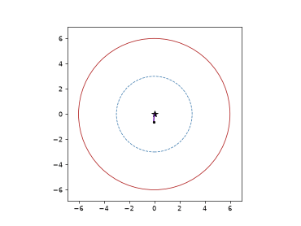
Bhabha and Heitler’s cascade theory of cosmic-ray showers
1938-1939 – Hahn, Strassmann, Meitner, and Frisch: The Discovery of Nuclear Fission#
Bombarding uranium with neutrons in Berlin, Otto Hahn and Fritz Strassmann found, to their own disbelief, that the product was chemically identical to barium – roughly half the mass of uranium – rather than a slightly heavier transuranic element as everyone had expected. Lise Meitner and her nephew Otto Frisch, in exile in Sweden, recognized what Hahn could not bring himself to publish: the uranium nucleus, in Meitner and Frisch’s words, had “split” into two lighter nuclei, releasing energy because the liquid drop’s surface tension is overwhelmed by Coulomb repulsion once \(Z\) is large enough. Using Weizsacker’s own binding-energy formula, Meitner and Frisch estimated the energy release at roughly 200 MeV per fission – around forty million times the energy released per atom in a chemical reaction – correctly identifying the process, coining the term “fission,” and setting off the chain of events that led, within seven years, to both civilian nuclear power and nuclear weapons. Hahn alone received the 1944 Nobel Prize in Chemistry for the discovery; Meitner’s and Frisch’s theoretical identification of what Hahn had actually observed is now recognized as essential to the discovery.
Implementation: the energy release Meitner and Frisch estimated is
exactly \(Q=\sum m_{\rm reactants}-\sum m_{\rm products}\), computed
by physicskit.particle.nuclear.q_value(), and is equally well
recovered as the increase in total binding energy,
\(B_{\rm fragments}-B_{\rm parent}\), from
semf_binding_energy() – the same
liquid-drop formula from the previous entry, now applied on the
heavy-nucleus side of the binding-energy curve where splitting, not
fusing, is what releases energy.
References: O. Hahn and F. Strassmann, Naturwissenschaften 27, 11-15 (1939); L. Meitner and O. R. Frisch, Nature 143, 239-240 (1939); O. R. Frisch, Nature 143, 276 (1939).
Cockcroft-Walton’s disintegration and the discovery of fission
1947 – Lattes, Occhialini, and Powell: The Discovery of the Charged Pion#
Studying cosmic-ray tracks recorded in photographic emulsion exposed at high-altitude observatories in the Andes, Cesar Lattes, Giuseppe Occhialini, and Cecil Powell found tracks of a particle that decayed at rest into a second, lighter charged particle plus an unseen neutral one, with the daughter always emerging at the same fixed momentum:
This identified Hideki Yukawa’s 1935 hypothesized meson – the particle predicted to carry the strong nuclear force between protons and neutrons – and simultaneously separated it from the lighter cosmic-ray particle already known (and previously confused with Yukawa’s meson, see the 1936-1937 entry above) that we now call the muon: the pion decays into the muon, not the other way around. Lattes, a young Brazilian physicist working in Powell’s Bristol laboratory, did much of the emulsion scanning and analysis that identified the characteristic decay tracks – and went on to help produce the first artificially generated pions in a cyclotron the following year – but only Powell shared in recognition from the Nobel committee: Powell alone received the 1950 Nobel Prize in Physics for the photographic method and the discovery it enabled, a frequently noted case of a key contributor to a Nobel-winning discovery going unrecognized by the prize itself.
The muon itself, unlike the pion, does not decay via a clean two-body process: \(\mu^-\to e^-+\bar\nu_\mu+\nu_e\) is a three-body weak decay, and its electron-energy spectrum was worked out by Louis Michel in 1950 from the general structure of the four-fermion weak interaction (later established to be V-A). Michel found that, for an unpolarized muon and a massless electron, the number of decays per unit scaled electron energy \(x=2E_e/m_\mu\) follows
rising smoothly from zero at \(x=0\) to its maximum at the kinematic endpoint \(x=1\), where the electron carries essentially all the available energy and the two neutrinos recoil together, back to back with it. This “Michel spectrum” shape was confirmed early and precisely enough that any deviation from it – parametrized today by the four Michel parameters \(\rho,\eta,\xi,\delta\) – remains one of the most sensitive laboratory tests of the weak interaction’s V-A structure.
Implementation: physicskit.particle.decays.two_body_decay_momentum()
computes exactly the fixed daughter momentum \(p^{*}\) above (the
Kallen-function formula, with the neutrino’s mass set to zero), and
two_body_decay() builds the full
daughter four-momenta at a chosen emission angle – the same
back-to-back, fixed-\(p^{*}\) kinematics Powell’s group identified
from the fixed track length of the muon in every pion-decay event they
photographed. The muon’s own further decay follows the same
chained-two-body-decay construction one level deeper:
physicskit.particle.decays.michel_spectrum() evaluates Michel’s
\(d\Gamma/dx\) formula directly,
sample_michel_electron_energies() draws
electron energies from it by rejection sampling, and
muon_decay_event() builds one complete
three-body \(\mu^-\to e^-\bar\nu_\mu\nu_e\) event – two chained
calls to two_body_decay(), boosted
with boost_generic() – whose
electron energy matches exactly the sampled Michel-spectrum value.
References: C. M. G. Lattes, G. P. S. Occhialini, and C. F. Powell, Nature 160, 453-456 and 486-492 (1947), in the paper’s own author order; H. Yukawa, Proc. Phys.-Math. Soc. Japan 17, 48-57 (1935); L. Michel, Proc. Phys. Soc. A 63, 514-531 (1950).
Pauli, Fermi, and the pion: two-body vs. three-body decay kinematics
1947 – Rochester and Butler: The Strange Particles and the First Kaons#
Later the same year, photographing cosmic-ray tracks in a cloud chamber at Manchester triggered by counters to catch penetrating showers, George Rochester and Clifford Butler found two forked tracks unlike anything then known: a neutral particle decaying in flight into two charged particles (a “V0”), and a charged particle decaying into a charged secondary plus something unseen. Both events implied parent masses of several hundred electron masses – heavier than the newly identified pion, lighter than the proton – decaying into final states of ordinary, already-known particles. These were the first examples of what came to be called, for their unexpectedly long lifetimes given how copiously they were later found to be produced, the “strange particles”: the neutral kaon (\(K^0\)) and charged kaon (\(K^\pm\)) among the first identified. Confirming and classifying the new particles took most of the following decade, but Rochester and Butler’s two photographs opened the neutral-kaon system that would, seventeen years later, supply the first evidence for CP violation (see the 1964 entry below).
Connection: the neutral-kaon system Rochester and Butler discovered is
exactly the two-state system
physicskit.particle.electroweak.meson_decay_rates_cp_eigenstate()
and cp_asymmetry() model
generically (as a Wigner-Weisskopf flavor-mixing problem) in the 1964
Cronin-Fitch entry below – this entry is simply the particle’s
discovery, prior to any of the mixing phenomenology built on top of it.
References: G. D. Rochester and C. C. Butler, “Evidence for the Existence of New Unstable Elementary Particles,” Nature 160, 855-857 (1947).
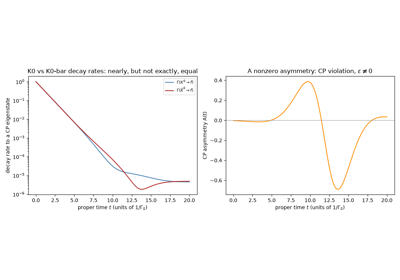
The neutral kaon system: from discovery to CP violation
1947-1949 – Tomonaga, Schwinger, Feynman, and Dyson: Renormalized Quantum Electrodynamics#
Precision measurements of the hydrogen fine structure (the Lamb shift), reported in 1947, and of the electron’s anomalous magnetic moment – first hinted at by an anomalous gallium hyperfine splitting reported the same year, with the definitive measurement following in 1948 – disagreed with the existing (unrenormalized) Dirac-theory predictions by small but unmistakably nonzero amounts – exactly the regime where quantum electrodynamics’ formally infinite loop corrections needed to be tamed rather than simply discarded. Sin-Itiro Tomonaga (working from wartime and postwar Japan, published in English in 1948), Julian Schwinger (1948), and Richard Feynman (1948-1949, with his diagrammatic technique) each independently developed a fully relativistic, gauge-invariant formulation of QED in which the theory’s ultraviolet divergences are absorbed, order by order, into a redefinition (“renormalization”) of the electron’s observed mass and charge, leaving finite and spectacularly accurate predictions for everything else. Freeman Dyson showed in 1949 that Tomonaga’s, Schwinger’s, and Feynman’s superficially different approaches were mathematically equivalent, and that the renormalization procedure could be carried out to arbitrary order – establishing QED as, to this day, the most precisely tested theory in physics. Tomonaga, Schwinger, and Feynman shared the 1965 Nobel Prize in Physics “for their fundamental work in quantum electrodynamics, with deep-ploughing consequences for the physics of elementary particles.”
One of QED’s cleanest tree-level (lowest-order, single-virtual-photon) predictions is the annihilation process \(e^+e^-\to\mu^+\mu^-\), whose differential cross section in the massless-fermion limit is
with \(\theta\) the muon’s center-of-mass polar angle and \(s\) the squared center-of-mass energy. This prediction was confirmed to good precision once electron-positron colliders reached high enough energy in the following decades, becoming a standard way to calibrate a new machine’s luminosity and to test QED’s validity at ever shorter distances.
Implementation: physicskit.particle.electroweak.qed_dsigma_domega_mumu()
evaluates exactly this tree-level differential cross section, and
qed_total_cross_section_mumu()
integrates it over the full solid angle to the textbook total cross
section \(\sigma=4\pi\alpha^2/(3s)\);
physicskit.particle.visualizers.animate_qed_angular_distribution()
animates the \((1+\cos^2\theta)\) angular shape as \(\sqrt s\)
is swept.
References: S. Tomonaga, Prog. Theor. Phys. 1, 27-42 (1946); J. Schwinger, Phys. Rev. 73, 416 (1948) and Phys. Rev. 74, 1439 (1948); R. P. Feynman, Phys. Rev. 76, 749 and 769 (1949); F. J. Dyson, Phys. Rev. 75, 486 and 1736 (1949). Lamb shift: W. E. Lamb and R. C. Retherford, Phys. Rev. 72, 241-243 (1947). Anomalous magnetic moment: the preliminary 1947 hyperfine-anomaly hint has no single canonical citation; the definitive measurement is P. Kusch and H. M. Foley, Phys. Rev. 74, 250-263 (1948).
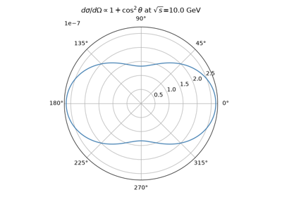
Tomonaga, Schwinger, Feynman, and Dyson: renormalized QED
1956 – Cowan and Reines: Direct Detection of the Neutrino#
More than two decades after Pauli’s postulate and Fermi’s quantitative theory of beta decay, Clyde Cowan and Frederick Reines set out to catch Pauli’s “undetectable” particle directly. Placing water tanks laced with cadmium chloride and sandwiched between liquid-scintillator detectors next to the intense antineutrino flux from the Savannah River nuclear reactor, they searched for the inverse beta decay reaction
whose signature is unmistakable: the positron annihilates with an electron within nanoseconds, producing a prompt pair of back-to-back 0.511 MeV photons, while the neutron, after slowing down and being captured by a cadmium nucleus microseconds later, produces a second, delayed burst of gamma rays – a coincident, delayed two-flash signal that no ordinary radioactive background mimics. After an inconclusive first attempt at Hanford in 1953, Cowan, Reines, and collaborators detected this exact delayed-coincidence signature at Savannah River in 1956, confirming, in their own words, “the free neutrino” – the first direct experimental detection of any neutrino, twenty-six years after Pauli first proposed its existence to explain the beta-decay spectrum. Reines shared the 1995 Nobel Prize in Physics for the discovery; Cowan, who had died in 1974, could not.
Connection: physicskit.particle.decays.two_body_decay_momentum()
computes exactly the fixed final-state momentum a two-body kinematic
configuration like \(\bar\nu_e+p\to n+e^+\) produces once the
available energy is fixed – the same Källén-function machinery already
used, in the Pauli entry above, to describe why two-body (rather than
three-body) decay kinematics was the puzzle the neutrino was invented to
resolve; here that same machinery describes the reaction that finally
caught the particle itself.
References: C. L. Cowan Jr., F. Reines, F. B. Harrison, H. W. Kruse, and A. D. McGuire, “Detection of the Free Neutrino: a Confirmation,” Science 124, 103-104 (1956).
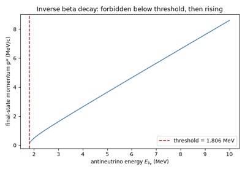
Cowan and Reines: direct detection of the neutrino
1956-1957 – Lee, Yang, and Wu: Discovery of Parity Violation#
By the mid-1950s, parity – invariance of the laws of physics under mirror reflection – was assumed to hold for every fundamental interaction, strong and electromagnetic alike, though it had never actually been tested in weak decays. Confronted with the “tau-theta puzzle” (two apparently identical particles decaying into final states of opposite parity, later resolved once both were recognized as the same particle, the kaon), Tsung-Dao Lee and Chen-Ning Yang re-examined the experimental record in 1956 and found that parity conservation in the weak interaction was simply an untested assumption; they proposed several experiments to settle it and predicted that mirror symmetry could well be broken. Chien-Shiung Wu took up the challenge within months, cooling a sample of beta-decaying cobalt-60 nuclei to a fraction of a degree above absolute zero inside a magnetic field so their nuclear spins aligned, then counting the emitted electrons above and below the sample. If parity held, electrons should emerge equally often parallel and antiparallel to the nuclear spin, since reflecting the setup in a mirror – which reverses the electron’s momentum but not the spin, an axial vector – would otherwise turn an allowed configuration into a forbidden one. Wu found instead a pronounced asymmetry: electrons emerged preferentially opposite to the spin direction, at a rate
with \(\theta\) the angle between the electron’s momentum and the nuclear spin – parity is violated, and about as completely as it is possible to violate it, in the weak interaction. Lee and Yang shared the 1957 Nobel Prize in Physics for the theoretical prediction, awarded within a year of Wu’s confirmation; Wu herself, whose experiment made the discovery, did not share the prize.
Connection: the asymmetric angular distribution \(1+A\cos\theta\)
above is exactly the same functional form, and the same
“count events on either side of a chosen axis and take a normalized
difference” logic, as
physicskit.particle.electroweak.cp_asymmetry() applies to the
neutral-kaon system in the entry below: both quantify a fundamental
discrete symmetry’s violation as a nonzero asymmetry that vanishes
identically the moment the underlying interaction respects the symmetry
(\(A=0\), or \(\varepsilon=0\)).
physicskit.particle.decays.two_body_decay()’s cos_theta
parameter – the emission angle of a decay product relative to a chosen
axis – is exactly the kinematic quantity, generalized to Wu’s fixed-spin
axis rather than a freely chosen one, whose distribution Wu’s experiment
showed was not flat.
References: T. D. Lee and C. N. Yang, Phys. Rev. 104, 254-258 (1956); C. S. Wu, E. Ambler, R. W. Hayward, D. D. Hoppes, and R. P. Hudson, Phys. Rev. 105, 1413-1415 (1957).
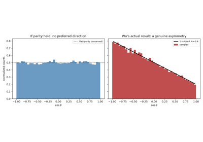
Lee, Yang, and Wu: the discovery of parity violation
1957-1962 – Pontecorvo, Maki, Nakagawa, and Sakata: Neutrino Oscillations#
Soon after Tsung-Dao Lee and Chen-Ning Yang, and independently Lev Landau and Abdus Salam, proposed in 1957 that the neutrino is a two-component, massless particle of definite helicity, Bruno Pontecorvo noted that if neutrinos instead carried a small mass, nothing would forbid the same kind of particle-antiparticle mixing already established in the neutral-kaon system – and, by extension, oscillation between different neutrino “flavors” over macroscopic distances. Pontecorvo’s 1957-1958 papers first raised neutrino-antineutrino oscillation; once a second neutrino flavor (the muon neutrino) was confirmed to exist in 1962, the idea extended naturally to oscillation between flavors. That same year, Ziro Maki, Masami Nakagawa, and Shoichi Sakata introduced, independently and by a different route (a composite-particle model rather than oscillation phenomenology), the flavor-mixing matrix relating weak-interaction (“flavor”) neutrino states to states of definite mass – honored, together with Pontecorvo’s name, as the PMNS matrix.
In the simplest two-flavor version of the resulting formalism, a neutrino produced in flavor state \(e\) oscillates into flavor \(\mu\) with probability
oscillating with distance \(L\) at a rate set by the mixing angle \(\theta\) and the mass-squared splitting \(\Delta m^2\) between the two mass eigenstates – so oscillation happens if, and only if, neutrinos have nonzero, non-degenerate masses, directly contradicting the original massless two-component picture. Confirmation came decades later: the Super-Kamiokande experiment announced compelling (6.2-sigma) evidence for atmospheric muon-neutrino oscillation in 1998, and in 2001-2002 the Sudbury Neutrino Observatory (SNO), combined with Super-Kamiokande’s own data, showed that the long-standing solar-neutrino deficit was likewise due to electron neutrinos oscillating into other flavors on their way from the Sun – establishing definitively that neutrinos have mass.
Implementation: physicskit.particle.neutrinos.oscillation_probability()
evaluates exactly the two-flavor formula above, and
survival_probability() its
complement \(P(\nu_e\to\nu_e)=1-P(\nu_e\to\nu_\mu)\);
physicskit.particle.visualizers.animate_neutrino_oscillation()
animates both probabilities growing with baseline \(L\), exactly the
oscillating flavor composition Super-Kamiokande and SNO measured.
References: B. Pontecorvo, Zh. Eksp. Teor. Fiz. 33, 549 (1957) [Sov. Phys. JETP 6, 429 (1958)] and Zh. Eksp. Teor. Fiz. 34, 247 (1958) [Sov. Phys. JETP 7, 172 (1958)]; Z. Maki, M. Nakagawa, and S. Sakata, Prog. Theor. Phys. 28, 870-880 (1962); Super-Kamiokande Collaboration, Phys. Rev. Lett. 81, 1562-1567 (1998); SNO Collaboration, Phys. Rev. Lett. 87, 071301 (2001) and Phys. Rev. Lett. 89, 011301 (2002).
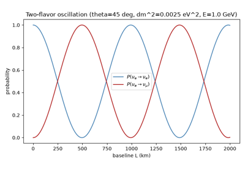
Pontecorvo, Maki, Nakagawa, and Sakata: neutrino oscillations
1958 – Mandelstam Variables and Relativistic Collision Kinematics#
Building relativistic dispersion relations for pion-nucleon scattering, Stanley Mandelstam introduced a set of Lorentz-invariant combinations of the incoming and outgoing four-momenta of a two-to-two collision \(1 + 2 \to 3 + 4\),
satisfying \(s + t + u = \sum_i m_i^2\) for on-shell particles. Because \(s\), \(t\), and \(u\) are frame-independent by construction – \(s\) is simply the square of the total center-of-momentum energy, \(t\) and \(u\) the squared momentum transfers along the two possible channels – they became, and remain, the standard coordinates for expressing any relativistic scattering amplitude or cross section, independent of the frame in which an experiment happens to be performed.
Implementation: physicskit.particle.scattering.mandelstam_s(),
mandelstam_t(), and
mandelstam_u() compute exactly
these three invariants from
FourVector arguments;
physicskit.particle.kinematics.boost_to_com() and
invariant_mass() give the
complementary frame-dependent-to-invariant machinery – boosting a
collision into the frame where \(\sqrt{s}\) is simply the total
energy – that every Mandelstam-variable calculation relies on.
References: S. Mandelstam, Phys. Rev. 112, 1344-1360 (1958).
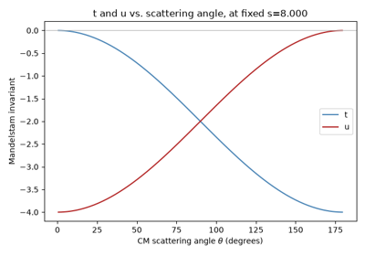
Mandelstam variables and relativistic collision kinematics
1964 – Cronin and Fitch: Discovery of CP Violation in Neutral Kaon Decay#
By the early 1960s, parity (P) violation in the weak interaction was well established, but the combined symmetry CP – charge conjugation (swapping particles for antiparticles) together with parity – was still believed exact. For the neutral kaon system this predicted that the long-lived mass eigenstate \(K_L\), being (to good approximation) CP-odd, could not decay to two pions (a CP-even final state), only to three. Working at Brookhaven National Laboratory with Rene Turlay and James Christenson, James Cronin and Val Fitch searched a beam of \(K_L\) mesons – filtered so that essentially none of the shorter-lived \(K_S\) component could survive to the detector – for exactly this forbidden two-pion decay, and found it: at a rate of about two parts in a thousand, \(K_L\to\pi^+\pi^-\) occurred. CP symmetry, not just P alone, is violated in nature. The result was disbelieved at first – Cronin and Fitch spent the better part of a year ruling out mundane backgrounds – before being accepted as genuine, earning them the 1980 Nobel Prize in Physics.
Phenomenologically the effect is described by writing the light and heavy neutral-kaon mass eigenstates as almost, but not quite, equal admixtures of CP eigenstates, with a small complex parameter \(\varepsilon\) (\(|\varepsilon|\sim2\times10^{-3}\)) giving \(K_L\) a small CP-even, two-pion-decaying component. Watching an initially pure, flavor-tagged neutral-meson beam decay to a common CP-eigenstate final state over time, the two flavor-tagged decay rates interfere and differ by an amount proportional to \(\varepsilon\), oscillating at the \(K_S\)-\(K_L\) mass difference \(\Delta m\) inside an envelope set by their two different lifetimes – the same interference pattern used, in the decades since, to measure \(\Delta m\) and the \(K_S\) lifetime to high precision.
Implementation:
physicskit.particle.electroweak.meson_decay_rates_cp_eigenstate()
evaluates exactly this Wigner-Weisskopf two-state-mixing prediction for
the flavor-tagged decay rates to a common final state (labeled generically
after the \(K^0\)-\(\bar K^0\) system Cronin and Fitch studied),
and cp_asymmetry() gives their
normalized difference – identically zero for \(\varepsilon=0\),
oscillating and nonzero the instant a CP-violating \(\varepsilon\)
is switched on, exactly the asymmetry behind Cronin and Fitch’s forbidden
two-pion rate.
physicskit.particle.visualizers.animate_cp_asymmetry() animates
this asymmetry building up over proper time.
References: J. H. Christenson, J. W. Cronin, V. L. Fitch, and R. Turlay, Phys. Rev. Lett. 13, 138-140 (1964).
The neutral kaon system: from discovery to CP violation
1964 – Higgs, Brout-Englert, and Guralnik-Hagen-Kibble: The Symmetry-Breaking Mechanism#
Gauge theories of the weak interaction ran into an apparent contradiction in the early 1960s: gauge invariance seemed to forbid explicit mass terms for the force-carrying vector bosons, yet the weak force is short-ranged, which requires massive carriers. A non-relativistic precursor came from condensed matter physics: in 1963, Philip Anderson noted that a plasma’s Goldstone mode is not actually massless once coupled to the electromagnetic field, exactly the loophole a relativistic gauge theory would need, though without a fully relativistic demonstration his argument left many unconvinced it applied. In 1964, Robert Brout and Francois Englert, followed within weeks by Peter Higgs, and shortly after by Gerald Guralnik, C. R. Hagen, and Tom Kibble, gave that relativistic demonstration and showed independently how to escape the contradiction: couple the gauge field to a scalar field sitting in a Mexican-hat-shaped (\(\phi^4\), double-well) potential whose true minimum lies away from the naively symmetric point \(\phi=0\). Once the field settles into one such minimum – spontaneously “choosing” it, and thereby hiding, though not destroying, the underlying gauge symmetry – the massless Goldstone boson that would otherwise accompany that choice is instead absorbed into the gauge field as its longitudinal polarization, and the gauge boson acquires mass. Higgs in fact published two short papers in 1964: the first (Physics Letters, July) laid out the mechanism itself, and was extended, after a referee at Physical Review Letters objected that it said nothing about observable consequences, into a second paper (Physical Review Letters, October) that was the only one of the three groups’ papers to note explicitly that the mechanism also predicts a new, massive scalar particle – a genuine excitation of the field around its true vacuum – associated with the curvature of the potential at its minimum.
Applied to the electroweak theory later in the decade, the mechanism gives the \(W\) and \(Z\) bosons their observed masses while leaving the photon massless, and predicts a single new “Higgs boson” whose own mass is not fixed by the theory. The classical, spatially uniform version of the field rolling from the unstable symmetric point down into a true vacuum obeys
settling at \(\phi=\pm v\), \(v=\sqrt{a/(2b)}\) – the vacuum expectation value whose electroweak analogue is fixed experimentally at about 246 GeV. Nearly five decades after this theoretical proposal, the particle itself was found in 2012 (see the entry below).
Implementation: physicskit.particle.electroweak.higgs_potential()
and higgs_vev() implement
\(V(\phi)\) and its true-vacuum value \(v\) exactly as above;
higgs_field_rollover() numerically
integrates the classical rollover equation of motion, letting a field
started near the unstable symmetric point settle into one of the two
true vacua depending on which side its initial perturbation pushes it –
a direct, if classical and 0+1-dimensional, realization of the
spontaneous symmetry breaking these three papers proposed.
physicskit.particle.visualizers.animate_higgs_rollover() animates
the field’s trajectory rolling down the double-well potential.
References: F. Englert and R. Brout, Phys. Rev. Lett. 13, 321-323 (1964); P. W. Higgs, Phys. Lett. 12, 132-133 (1964) and Phys. Rev. Lett. 13, 508-509 (1964); G. S. Guralnik, C. R. Hagen, and T. W. B. Kibble, Phys. Rev. Lett. 13, 585-587 (1964). Non-relativistic precursor: P. W. Anderson, Phys. Rev. 130, 439-442 (1963).
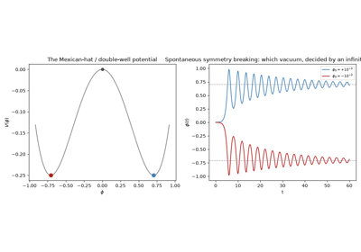
Higgs, Brout-Englert, and Guralnik-Hagen-Kibble: symmetry breaking
1961-1968 – Glashow, Weinberg, and Salam: Unification of the Weak and Electromagnetic Interactions#
Electromagnetism and the weak interaction look nothing alike at everyday energies: one is long-ranged and mediated by a massless photon, the other short-ranged, parity-violating, and (as the discovery of the neutron and countless beta decays had shown) apparently carried by something altogether different. In 1961, Sheldon Glashow proposed that both are nonetheless pieces of a single gauge theory based on the group \(SU(2)\times U(1)\), with four gauge bosons – an early version of the \(W^+\), \(W^-\), \(Z^0\), and photon – but no way, within his own model, to give the weak bosons the mass their short range requires without also giving the photon a mass it manifestly does not have. Steven Weinberg in 1967, and independently Abdus Salam in 1968, supplied exactly the missing piece: coupling Glashow’s gauge group to a Higgs field (see the entry above) breaks the symmetry down to the electromagnetism we observe, leaving the photon massless while the \(W\) and \(Z\) bosons acquire mass proportional to the same electroweak vacuum expectation value, related by a single new parameter, the weak mixing (Weinberg) angle \(\theta_W\):
The completed electroweak theory predicted the existence, masses, and couplings of the \(W\) and \(Z\) bosons more than a decade before either was directly produced and detected (see the 1983 entry below), and predicted an entirely new class of interaction – weak neutral currents, mediated by the electrically neutral \(Z^0\) – that had never before been observed in any weak process (see the following entry).
Implementation: physicskit.particle.electroweak is this
package’s home for exactly the ingredients Glashow, Weinberg, and Salam’s
theory unifies under one gauge group: qed_dsigma_domega_mumu()
and qed_total_cross_section_mumu()
implement the electromagnetic (photon-exchange) sector the theory
reproduces at low energy, while higgs_potential()
and higgs_vev() implement the
same symmetry-breaking mechanism this theory uses to give the \(W\)
and \(Z\) their mass while leaving the photon massless – the
package does not compute the Weinberg angle or a unified electroweak
coupling directly, but collects the pieces the unification joins.
References: S. L. Glashow, Nucl. Phys. 22, 579-588 (1961); S. Weinberg, Phys. Rev. Lett. 19, 1264-1266 (1967); A. Salam, in Elementary Particle Theory, ed. N. Svartholm (Almqvist & Wiksell, Stockholm, 1968), p. 367.
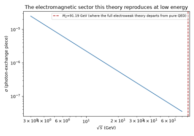
Glashow, Weinberg, and Salam: electroweak unification
1969 – Feynman’s Parton Model and the Discovery of Quark and Gluon Jets#
Deep inelastic electron-proton scattering experiments at SLAC in 1968-1969 turned up a puzzle: the measured cross sections depended only on a single dimensionless combination of energy and momentum transfer – a property James Bjorken had predicted on general grounds and named “scaling” – rather than on the two variables separately, as would be expected if the proton behaved as a single soft, extended object. Visiting SLAC in August 1968, Richard Feynman recognized what this meant: the electron was scattering incoherently off point-like constituents inside the proton, which he called “partons,” each carrying some fraction of the proton’s momentum – exactly the kinematics that produces Bjorken scaling. The partons were soon identified with Murray Gell-Mann and George Zweig’s 1964 quarks (plus the electrically neutral gluons binding them), turning what had been an ad hoc mathematical classification scheme for hadrons into a picture of genuinely point-like constituents rattling around inside a much larger bound state.
If quarks are real, sufficiently energetic collisions should occasionally kick one hard enough that its subsequent showering and hadronization – its “parton shower,” a cascade of ever-softer quarks and gluons that eventually clump into observable hadrons, the same qualitative branching-cascade picture as Bhabha and Heitler’s electromagnetic showers but governed by the strong rather than the electromagnetic interaction – leaves a collimated spray of particles all moving in roughly the struck quark’s original direction: a “jet.” The SLAC-LBL collaboration found exactly this two-jet structure in electron-positron annihilation in 1975, direct evidence for quarks materializing as jets of hadrons; four years later, in 1979, the four experiments at DESY’s PETRA collider (TASSO, PLUTO, JADE, and MARK-J) observed events with a third, separate jet – direct evidence for the gluon itself being radiated as a distinct, resolvable parton, exactly as quantum chromodynamics predicted.
Implementation: physicskit.particle.collider.parton_shower()
builds a toy DGLAP-flavored branching cascade – a quark or antiquark
always radiating a gluon, a gluon splitting into a gluon pair or a
quark-antiquark pair – as a simplified stand-in for the parton showers
underlying jet formation;
cluster_into_jets() groups the
resulting final-state partons by angular proximity into jets,
schematically recovering the two- and three-jet topologies SLAC-LBL and
PETRA discovered.
physicskit.particle.visualizers.animate_parton_shower() animates
the flavor-colored shower tree developing and overlays the reconstructed
jet axes.
References: R. P. Feynman, Phys. Rev. Lett. 23, 1415-1417 (1969); J. D. Bjorken, Phys. Rev. 179, 1547-1553 (1969); M. Breidenbach et al., Phys. Rev. Lett. 23, 935-939 (1969); M. Gell-Mann, Phys. Lett. 8, 214-215 (1964) (the quark-model precursor). Quark jets: G. Hanson et al., Phys. Rev. Lett. 35, 1609-1612 (1975). Gluon jets: R. Brandelik et al. (TASSO), Phys. Lett. B 86, 243-249 (1979).
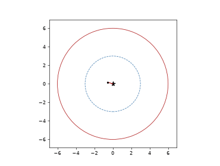
From collision to detector: a hard scatter, its shower, and its tracks
1973 – Kobayashi and Maskawa: The CKM Matrix and Three Quark Generations#
Cronin and Fitch’s 1964 discovery of CP violation in the neutral kaon system (see the entry above) had no accepted theoretical explanation for nearly a decade: the Standard Model as then understood, with only the up, down, and strange quarks known, had no room in its quark-mixing structure for a CP-violating phase at all. In 1973, Makoto Kobayashi and Toshihide Maskawa showed that if a third generation of quarks existed – at the time, an audacious and entirely unconfirmed extrapolation of a pattern known to hold for only two – the resulting three-generation quark-mixing matrix (generalizing the two-generation Cabibbo matrix, and now called the Cabibbo-Kobayashi-Maskawa, or CKM, matrix) unavoidably admits exactly one physical complex phase, and hence CP violation, as an intrinsic feature of the weak interaction rather than an ad hoc addition to it. The prediction was confirmed piecemeal over the following decades, first by the discovery of the charm, bottom, and top quarks themselves (completing the required three generations; see the entry below for the last of these) and later by direct measurements of CP violation in the bottom-quark (B-meson) system consistent with the CKM mechanism’s specific predictions – work recognized by the 2008 Nobel Prize in Physics.
Connection: the CKM matrix is the quark-sector counterpart of the
PMNS matrix already covered in the 1957-1962 neutrino-oscillation entry
above – both are unitary matrices relating a weak-interaction
(“flavor”) basis to a mass basis, one for the down-type quarks and one
for the neutrinos, and both quantify how completely mixing among
generations can violate a naive flavor-conservation expectation.
physicskit.particle.neutrinos implements the lepton-sector analogue,
oscillation_probability(), in
detail; no analogous CKM-matrix or quark-mixing function exists in
physicskit.particle. The CP-violating \(\varepsilon\)
parameter that physicskit.particle.electroweak.cp_asymmetry()
takes as an input, and that the 1964 Cronin-Fitch entry above treats
purely phenomenologically, is exactly the observable quantity the CKM
mechanism explains from first principles.
References: M. Kobayashi and T. Maskawa, Prog. Theor. Phys. 49, 652-657 (1973).
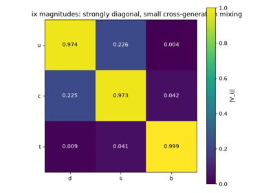
Kobayashi and Maskawa: the CKM matrix and three quark generations
1973-1974 – Gross, Wilczek, Politzer, and Wilson: Asymptotic Freedom and Quark Confinement#
Quarks had been a productive bookkeeping device since Gell-Mann and Zweig’s 1964 classification, and Feynman’s parton model treated them as free, point-like objects inside the proton – yet no free quark had ever been, or has since been, observed in isolation: an apparent contradiction between quarks behaving as free particles at short distances and never escaping their bound state. In 1973, David Gross and Frank Wilczek at Princeton, and independently David Politzer at Harvard, resolved half of the puzzle: they showed that non-Abelian gauge theories like quantum chromodynamics (QCD) have the unusual property of “asymptotic freedom” – their effective coupling constant shrinks, rather than grows, at short distance (high momentum transfer) – exactly the free-parton behavior deep inelastic scattering had revealed, and the opposite of QED’s coupling, which grows at short distance. The three shared the 2004 Nobel Prize in Physics. The flip side of a coupling that weakens at short distance is one that strengthens, without bound, at long distance – confinement – and in 1974 Kenneth Wilson’s lattice formulation of gauge theory made this quantitative: discretizing spacetime onto a lattice, he showed that the QCD potential between two color charges grows linearly with their separation,
rather than falling off as in electromagnetism, so that pulling a quark-antiquark pair apart costs an ever-increasing amount of energy. Past some threshold that energy is more cheaply spent creating a new quark-antiquark pair from the vacuum than stretching the “string” of color flux further – exactly why an isolated quark is never seen: the string breaks and hadronizes before it ever gets that far.
Implementation:
physicskit.particle.confinement.string_tension_energy() evaluates
exactly this linear confining potential, \(\kappa r\), the
long-distance QCD static potential Wilson’s lattice calculation
established;
string_break_chain() models a
receding quark-antiquark pair’s confining “string” breaking, once its
stored energy reaches the pair-production threshold for a new light
quark pair, into successively more (and shorter) segments – a
simplified, energy-balance-only account of exactly the process that
keeps a bare quark from ever being observed alone.
physicskit.particle.visualizers.animate_string_breaking() animates
the string stretching and successively snapping.
References: D. J. Gross and F. Wilczek, Phys. Rev. Lett. 30, 1343-1346 (1973); H. D. Politzer, Phys. Rev. Lett. 30, 1346-1349 (1973); K. G. Wilson, Phys. Rev. D 10, 2445-2459 (1974).
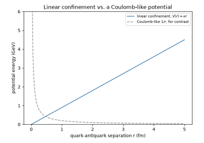
Asymptotic freedom and confinement: a receding quark pair’s string
1973 – Gargamelle: Discovery of Weak Neutral Currents#
Every weak interaction observed up to this point – beta decay, muon decay, the reactions Cowan and Reines used to catch the neutrino – was a “charged current” process: the participating particles always changed electric charge, exactly as a virtual \(W^{\pm}\) boson exchange requires. The electroweak theory of Glashow, Weinberg, and Salam (see the entry above) predicted something no charged-current process could produce: a “neutral current” interaction, mediated by an electrically neutral \(Z^0\), in which an incoming neutrino scatters off a target and leaves as a neutrino again, transferring energy and momentum without transferring charge. Using Gargamelle, a large heavy-liquid bubble chamber at CERN exposed to a muon-neutrino beam, an international collaboration led by Andre Lagarrigue and reported by F. J. Hasert and collaborators found exactly this: photographs of an incoming (invisible) neutrino track producing a recoiling electron or hadronic shower with no outgoing charged lepton anywhere in the picture, a topology charged-current weak interactions cannot produce at all. The discovery confirmed the electroweak theory’s most distinctive prediction a full decade before the \(Z^0\) itself was directly produced and its mass measured (see the 1983 entry below).
Connection: a neutral-current process shares its “no charge exchanged
in the vertex” topology with electromagnetic scattering rather than with
Fermi’s charged-current beta-decay contact interaction (see the 1933-1934
entry above); physicskit.particle.electroweak.qed_dsigma_domega_mumu()
implements the analogous neutral-mediator (photon) tree-level process
\(e^+e^-\to\mu^+\mu^-\) – a different force entirely, but the same
qualitative “neutral boson exchanged, no charge transferred” vertex
structure that made the Gargamelle events so distinctive against a
charged-current-only expectation.
References: F. J. Hasert et al. (Gargamelle Collaboration), Phys. Lett. B 46, 138-140 (1973).
Glashow, Weinberg, and Salam: electroweak unification
1974 – The November Revolution: Discovery of the J/psi#
Within an hour of each other on 11 November 1974, two independent experiments announced the same, entirely unexpected discovery. Samuel Ting’s group (E598) at Brookhaven, colliding protons on a fixed beryllium target and reconstructing the invariant mass of outgoing electron-positron pairs, found an extraordinarily narrow peak at 3.1 GeV – far narrower than any previously known hadronic resonance, meaning whatever it was lived enormously longer than expected. Burton Richter’s group (SLAC-SP-017) at SLAC’s brand-new \(e^+e^-\) storage ring, scanning center-of-mass energy and watching the hadronic and leptonic production rates, found the identical resonance from the opposite production direction, \(e^+e^-\to (\text{resonance}) \to \text{hadrons or }\ell^+\ell^-\). Ting’s group called it \(J\); Richter’s called it \(\psi\); both names stuck, giving the particle its double name, the \(J/\psi\). The resonance’s extreme narrowness was the key clue to what it was: a bound state of a charm quark and its own antiquark, \(c\bar c\), the first direct evidence for Glashow, Iliopoulos, and Maiani’s charm quark, predicted in 1970 on theoretical grounds unrelated to this specific discovery. The near-simultaneous, independent announcement from two different production mechanisms became known as the “November Revolution,” decisively establishing the reality of quarks as physical constituents rather than a bookkeeping device and triggering an explosion of subsequent charmonium spectroscopy. Richter and Ting shared the 1976 Nobel Prize in Physics, awarded within two years of the discovery.
Implementation: the “narrow peak in the reconstructed invariant mass”
signature that identified the \(J/\psi\) is exactly the bump-hunt
quantity physicskit.particle.kinematics.invariant_mass() computes
from an arbitrary collection of final-state
FourVector objects – the same
technique used to find the \(W\) and \(Z\) bosons nine years
later (see the entry below) and the Higgs boson decades after that.
two_body_decay() generates a
resonance’s leptonic decay products in its own rest frame exactly as a
\(J/\psi\to e^+e^-\) or \(J/\psi\to\mu^+\mu^-\) decay would, and
boost() carries them into the lab
frame in which the invariant mass peak is actually reconstructed.
References: J. J. Aubert et al. (E598 Collaboration), Phys. Rev. Lett. 33, 1404-1406 (1974); J. E. Augustin et al. (SLAC-SP-017 Collaboration), Phys. Rev. Lett. 33, 1406-1408 (1974).
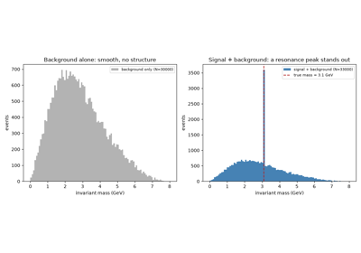
The invariant-mass bump hunt: J/psi, the W/Z, the top quark, and Higgs
1983 – Rubbia, van der Meer, and UA1/UA2: Discovery of the W and Z Bosons#
Carlo Rubbia proposed converting CERN’s Super Proton Synchrotron into a proton-antiproton collider, and Simon van der Meer developed the stochastic-cooling technique needed to compress a diffuse antiproton beam enough to make collisions frequent enough to matter. The resulting UA1 and UA2 experiments searched millions of collisions for the rare events in which a \(W\) or \(Z\) boson – the carriers of the weak force, predicted over a decade earlier by the electroweak theory of Glashow, Weinberg, and Salam – was produced and decayed into a clean pair of high-momentum leptons. Reconstructing the invariant mass of every candidate lepton pair from its measured four-momenta produces a smooth combinatorial background almost everywhere – except at the boson’s own mass, where genuine decays pile up into a sharp peak. Both the \(W\) (1983, mass around 80 GeV) and the \(Z\) (also 1983, mass around 91 GeV) were discovered exactly this way, earning Rubbia and van der Meer the 1984 Nobel Prize in Physics – less than a year after the discovery, one of the fastest Nobel recognitions on record.
Implementation: physicskit.particle.kinematics.invariant_mass()
is precisely the “bump hunt” quantity above – the reconstructed mass of
a candidate resonance from its decay products’ four-momenta, invariant
under whatever boost the resonance itself received when it was produced.
two_body_decay() generates a
resonance’s decay products in its own rest frame,
boost() carries them into a moving
“lab” frame exactly as the produced boson itself would recoil against
the rest of the collision, and
rapidity() and
boost_to_com() provide the
complementary collider-kinematics variables used to characterize each
event.
References: UA1 Collaboration, Phys. Lett. B 122, 103-116 (1983) and Phys. Lett. B 126, 398-410 (1983); UA2 Collaboration, Phys. Lett. B 122, 476-485 (1983) and Phys. Lett. B 129, 130-140 (1983).
The invariant-mass bump hunt: J/psi, the W/Z, the top quark, and Higgs
1995 – CDF and D0: Discovery of the Top Quark#
Every quark discovered since the charm (1974) and bottom (1977, at Fermilab) fit neatly into the three-generation pattern Kobayashi and Maskawa’s CP-violation mechanism required (see the 1973 entry above), but the sixth and heaviest quark, the top, needed a collider powerful enough to produce something far more massive than anyone had expected: not the tens of GeV once guessed, but roughly 175 GeV, nearly as heavy as an entire gold nucleus. At Fermilab’s Tevatron proton-antiproton collider, the CDF and D0 collaborations searched for top-antitop pair production followed by decay to a \(W\) boson and a bottom quark on each side, \(t\bar t\to W^+bW^-\bar b\), reconstructing the invariant mass of the top quark’s decay products (jets, leptons, and missing transverse energy standing in for an escaping neutrino) event by event. Both collaborations announced discovery-level evidence in the same week in 1995, completing the three-generation quark sextet up, down, charm, strange, top, and bottom – exactly eighteen years after the bottom quark’s discovery had made a sixth quark’s eventual existence all but certain, and vindicating Kobayashi and Maskawa’s 1973 extrapolation to three full generations.
Implementation: the top-quark mass reconstruction is, once again, the
same invariant-mass bump-hunt technique behind the \(W\)/\(Z\)
and \(J/\psi\) discoveries above:
physicskit.particle.kinematics.invariant_mass() combines an
arbitrary collection of reconstructed final-state
FourVector objects into the
candidate resonance mass, here applied one decay generation further down
the chain (\(t\to Wb\) rather than a single two-body resonance
decay) than the direct two-body reconstructions of earlier entries;
two_body_decay() and
boost() chain together to build
such a multi-step decay tree exactly as in the 2012 Higgs entry below.
References: F. Abe et al. (CDF Collaboration), Phys. Rev. Lett. 74, 2626-2631 (1995); S. Abachi et al. (D0 Collaboration), Phys. Rev. Lett. 74, 2632-2637 (1995).
The invariant-mass bump hunt: J/psi, the W/Z, the top quark, and Higgs
2012 – ATLAS and CMS: Discovery of the Higgs Boson#
Nearly half a century after Peter Higgs, Robert Brout and Francois Englert, and Gerald Guralnik, C. R. Hagen, and Tom Kibble proposed, in 1964 (see the entry above), a scalar field whose interaction with other particles is responsible for their mass, the ATLAS and CMS collaborations at CERN’s Large Hadron Collider announced, on 4 July 2012, the discovery of a new particle consistent with the long-sought Higgs boson, at a mass of about 125 GeV. The cleanest evidence came from the “golden channel”
a Higgs decaying to one on-shell and one virtual (off-shell) \(Z\) boson, each of which decays to a lepton pair, leaving four high-precision, easily reconstructed leptons in the final state. Summing the four leptons’ measured four-momenta and computing the invariant mass of the total produces a narrow peak at 125 GeV riding on a small, well-understood background – the same bump-hunt technique that found the \(W\) and \(Z\) bosons three decades earlier, applied one level deeper, to a resonance decaying to two intermediate resonances rather than one. Englert and Higgs shared the 2013 Nobel Prize in Physics for the theoretical prediction.
Implementation: the same
physicskit.particle.kinematics.invariant_mass() function
reconstructs the four-lepton invariant mass here exactly as it
reconstructed the two-lepton \(Z\)-boson mass in the previous entry
– summing an arbitrary number of FourVector
objects and taking the mass of the total, regardless of how many
intermediate resonances they descended from.
two_body_decay() and
boost() chain together to build
the full decay tree, \(H\to ZZ^{*}\to4\ell\).
References: ATLAS Collaboration, Phys. Lett. B 716, 1-29 (2012); CMS Collaboration, Phys. Lett. B 716, 30-61 (2012).
The invariant-mass bump hunt: J/psi, the W/Z, the top quark, and Higgs